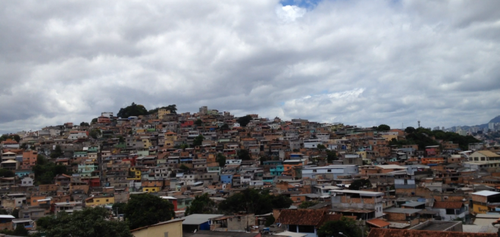

Curiosidades
Está sendo criado um espaço cultural, onde contém reliquias com fotos e vídeos do Cabana...
Ver maisCabana do pai tomás é uma favela onde residem mais de 15 mil pessoas. Situada na região Oeste de Belo Horizonte MG, é um lugar conhecido por grande criminalidade e também por sua variedade de comércios. Apesar de constantes notícias policiais, o bairro é tranquilo para se viver.
Está sendo criado um espaço cultural, onde contém reliquias com fotos e vídeos do Cabana...
Ver maisCentro juvenil de BH pede ajuda para arrecadar cestas básicas para famílias da Cabana Pai Tomás...
Ver maisApesar das medidas decretadas devido a onda roxa, onde apenas comércios essenciais deveriam funcionar, no bairro isso não